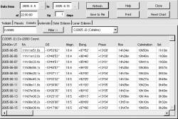
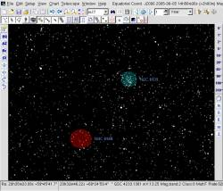
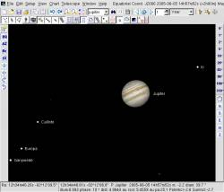

 Calendar menu
The Calendar menu show :
Most work the same as in version 2.75.
Only the Comet and Asteroid tab is different. To select an object enter a few letter or number from it's identification, then click the “Filter” button. This populate the list with a corresponding selection from the database. Then select the object from the list.
Remember you can click on any cell to set the chart for the specified event. For example if you click a line in the planet ephemeris table this center the planet to the chart. But if you click on the Rise, Culmination or Set column this also set the time of the event. Use the “Reset Chart” button to return to the initial condition. If you get lost close the program without saving the configuration.
The new default database is SQLite to simplify the installation process.
A personal database is now automatically created the first time the program is run.
On Windows the SQLite dll is include in the package, so no other installation is required.
On Linux you need to install libsqlite.so version 3 from your distribution , or use the package available in the Skychart download page.
The MySQL database is still available if you need to share the database among different user or computer.
 Set the nebulae color and surface brightness level
This better distinguish the different objet type without using the line drawing mode.
Reorganize some button for better usability.
The new Display bar allow to quickly show or hide some object from the chart.
The FOV buttons use the field value setting.
Also all the function are now also available from the menu.
A rudimentary help function is available that show the text of this page.
 Use Xplanet to display the planet image on Linux
The planet pictures are now also available in the Linux version with an interface to the Xplanet software (xplanet.sourceforge.net)
Look at the file skychart/data/planet/xplanet/README for information how to install this feature.
Other change:
{kind=link}
{kind=link}
{kind=link}